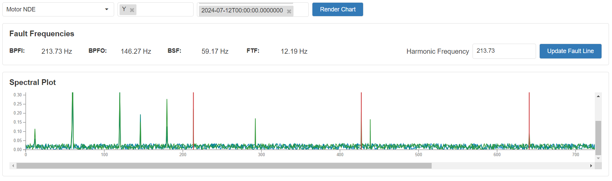
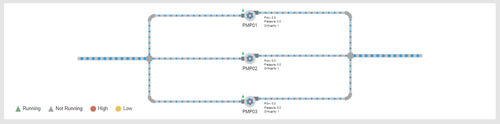
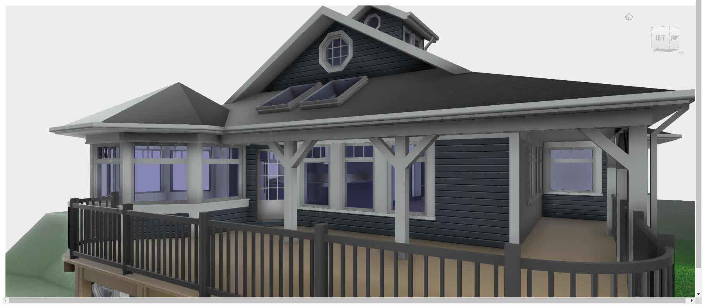
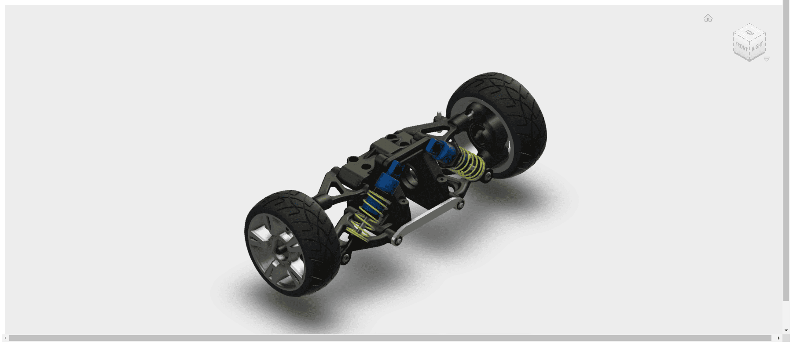

Metablock
Metablock allows pro-code designers to leverage libraries to add their dynamic blocks in XMPro using script files.
We recommend leveraging generative AI to write the scripts. This approach can significantly streamline the development process and enhance the functionality of the blocks.
Note
Only the Presentation File (HTML) is required. Utilize the other properties based on your specific needs for the Metablock behavior.
Metablock Properties
Behavior
Presentation File (HTML)
Upload the HTML script file that will be rendered in your Metablock, which is used to create dynamic blocks that may display data from a Data Source or from Value Mapping.
<div class="foo">bar</div>
Alternatively, you can write your scripts in a single HTML file that includes both CSS and JavaScript. This approach is ideal for smaller applications.
<!-- Style with CSS the div element with class foo the color blue -->
<style>
.foo { color: blue }
</style>
<!-- Html to show the text "foo" -->
<div class="foo">foo</div>
<!-- JavaScript to change the text "foo" to "bar" when the page has loaded -->
<script>
document.addEventListener('DOMContentLoaded', function() {
const fooDiv = document.querySelector('.foo');
fooDiv.innerHTML = 'bar';
});
</script>
Styling File (CSS)
If you wish to add styling, upload a CSS file to style your Metablock control.
.foo {
color : green;
}
Script File (JavaScript)
If you wish to run JavaScript, upload a JavaScript file for your Metablock. Place any initial/startup values as constants in this file.
const foo = 'foo';
Data Source
Common Properties
Common properties include: filter, sort, show # of results, and skip # of results;
See the Common Properties article for more details on common Data Source properties.
To use the Data Source property, include these predefined JavaScript functions in your Script File:
// Access data source when the metablock is loaded (optional)
function onDataLoaded(data) {
// Access a value from the data source
const foo = data.find(obj => 'foo' in obj).foo;
}
// Access live updates on the data source after the metablock has been loaded (optional)
function onDataChanged(data, changes) {
}
onDataLoaded(data) sample data format
[
{
"ReadingNo": 911,
"Timestamp": "2024-08-16T07:24:00.1791525Z",
"value": 3.6695501388374483,
"entityid": "static",
"_$parentProperties": {},
"_$parentExpressions": [],
"_$state": {
"_$typeName": "EntityState",
"name": "Unchanged"
}
}
]
The data above originates from a data stream that we've set up and it runs once upon page load. Keep in mind that the data format might differ based on your data source configuration.
onDataChanged(data, changes) sample data format
//data from `data` variable
[
{
"ReadingNo": 1156,
"Timestamp": "2024-08-16T08:04:52.3154712Z",
"value": 1.5450710600917559,
"entityid": "static",
"_$parentProperties": {},
"_$parentExpressions": [],
"_$state": {
"_$typeName": "EntityState",
"name": "Unchanged"
}
}
]
//data from `changes` variable
[
{
"ReadingNo": 1156,
"Timestamp": "2024-08-16T08:04:52.3154712Z",
"value": 1.5450710600917559,
"entityid": "static",
"_$parentProperties": {},
"_$parentExpressions": [],
"_$state": {
"_$typeName": "EntityState",
"name": "Unchanged"
}
}
]
In this example, both the data and changes variables contain identical data, indicating that there are no updates. However, in a real-world scenario, the changes variable would capture any modifications to the initial data.
You can refer to a working example script that demonstrates an Autodesk Forge visualization here.
Value
Value Mapping
If you wish to define value mappings for run-time use, you can configure user-defined key-value pairs. These values remain static during application rendering.
The Value Mapping opens a new blade to setup the Key and Value configuration. The options for the Value Source are Static, Dynamic, Expression and Variables.
When selecting Server Variables as a Source for the Value Mapping, the list of unencrypted Server Variables will be displayed. Tick the Encrypt checkbox to use an encrypted Server Variable for values like keys, secrets, or password. Note that only plain text values are supported for encrypted Server Variables due to the request proxying process.
From v4.4.18, encrypted Server Variables will not have their value available immediately on the Metablock. Instead, you can use them inside a Fetch/XHR request or a WebSocket/MQTT message before being forwarded to the actual target.
- Fetch/XHR Request - You can use encrypted server variables as part of the URL, Header, or Body of the Fetch/XHR request.
- WebSocket/MQTT Message - You can use encrypted server variables as part of the WebSocket message. For MQTT Messages, you can use it as part of the following message types: Connect (Username and Password), Publish (Payload), and Subscribe (Subscribe Topics)
Proxy Requests
Tick to proxy requests on the AD Server, so that encrypted server variables are replaced with the actual value before being forwarded to the target request. This is ticked by default when using an encrypted server variable on the value mapping, but you can opt in to use it even without any encrypted server variable.
To use Value Mapping, include this predefined JavaScript function in your Script File:
// Access Value mapping data when the metablock is loaded (optional)
function onValueMappingLoaded(data){
//Apply a value from the value mapping
const foo = data['foo'];
}
OnValueMappingLoaded(data) sample data format
{
"key": "Value",
"isWorking": true,
"counter": 10
"password": "{{var-x:Encrypted Variable Name}}" //Encrypted Server Variable template
}
Warning
Note: The password property will not have the actual value yet when it is mapped from an Encrypted Server Variable. Instead, it is just a template for the Server Variable name.
Real World Use Cases
Enhancing Chart Display
Use Value Mapping to incorporate user input for displaying Harmonic Frequency, maintaining connector integrity while improving data visualization.

Fig 1: Enhancing chart display
Note
GitHub Repository: Chart Display Enhancement
View the complete implementation example for enhancing chart display functionality.
Streamlining Pump Status Display
Leverage Value Mapping to dynamically pass URLs from other data sources or utilize expressions, eliminating the need for manual URL adjustments during version updates.

Fig 2: Pump status display
Note
GitHub Repository: Pump Status Display
View the complete implementation example for streamlining pump status display.
Autodesk: visualize 2D & 3D models
Access and visualize your engineering data and designs from the cloud using Autodesk Platform Services (APS, formerly Forge).
Leverage Value Mapping when embedding the APS Viewer in XMPro App Pages to display interactive 2D and 3D views of your designs.
Note: This is a simple example to demonstrate the APS Viewer API using an unauthenticated repository. Refer to the authenticated use case for a more complex example that includes security measures for credentials.

Fig 3: Autodesk Platform Services Viewer example without authentication
Note
GitHub Repository: APS View Basic
View the complete implementation example for basic Autodesk Platform Services viewer integration.
Autodesk: Visualize 2D & 3D models with authentication
When authentication is needed to dynamically load 2D and 3D views of your designs using the APS Viewer. We could utilize a Connector or the Value Mapping and use server variables for the credentials. This eliminates the need for hardcoded credentials while maintaining secure access to the visualization platform, Autodesk Platform Services (APS, formerly Forge). See the following Metablock examples on how to use these methods.
Autodesk: Authentication using Connector
Leverage the REST API Connector to get Token from the authentication service and the Data Source to pass the token to the Metablock.
Note
GitHub Repository: APS View with Authentication
View the complete implementation example for authenticated Autodesk Platform Services viewer integration using Connector.
Autodesk: Authenticate using Value Mapping
Leverage the Value Mapping to pass an encrypted Server Variable to the Metablock and call the authentication service using a Fetch request to get the Token.
Note
GitHub Repository: APS View with Authentication from Value Mapping
View the complete implementation example for authenticated Autodesk Platform Services viewer integration using Value Mapping.

Fig 4: Autodesk Platform Services Viewer example with authentication
Creating a Metablock Script: Step-by-Step Guide
Step 1: Search for a code snippet
Find relevant sample, we search for sample Autodesk Forge code and found the following links:
- Demo: Very Basic 3D Viewer (autodesk-forge.github.io)
- Github: viewer-javascript-offline.sample/index.html at gh-pages · Autodesk-Forge/viewer-javascript-offline.sample · GitHub
Step 2: Writing your Metablock script
Adapt the sample code to the Metablock format. For simplicity, the HTML, CSS & JavaScript has been combined into a single file.
<!-- main.html -->
<h1>Autodesk Forge Viewer</h1>
<div id="main"></div>
/* main.css */
h1 {
font-family: Arial, sans-serif;
color : #333;
}
// main.js
var hasInitialized = false;
function onValueMappingLoaded(data) {
// Prevent multiple initializations
if (hasInitialized)
return;
hasInitialized = true;
// Load the CSS forge dependencies
const cssViewerUrl = 'https://developer.api.autodesk.com/modelderivative/v2/viewers/style.min.css?v=v7.*';
loadCSSViewer(cssViewerUrl);
// Load the forge viewer
var viwerUrl = 'https://developer.api.autodesk.com/modelderivative/v2/viewers/7.*/viewer3D.min.js';
var viewer = loadViewer(viwerUrl);
// Get the model URL from the data
const modelUrl = data['model_url']
// Load the model into the viewer
loadModel(viewer, modelUrl);
}
function loadViewer(viewer_url) {
return new Promise((resolve, reject) => {
const script = document.createElement('script');
script.src = viewer_url;
script.onload = resolve;
script.onerror = reject;
document.head.appendChild(script);
});
}
function loadCSSViewer(css_viewer_url){
return new Promise((resolve, reject) => {
const link = document.createElement('link');
link.rel = "stylesheet";
link.type = "text/css";
link.href = css_viewer_url;
link.onload = resolve;
link.onerror = reject;
document.head.appendChild(link);
});
}
// Loads the model into the viewer
function loadModel(viewer, modelUrl) {
viewer.then(() => {
var myViewerDiv = document.getElementById('main');
var viewer = new Autodesk.Viewing.Private.GuiViewer3D(myViewerDiv);
var options = {
'env': 'Local',
'document': modelUrl
};
Autodesk.Viewing.Initializer(options, function onInitialized() {
viewer.start(options.document, options);
});
}).catch((error) => {
console.error('Failed to load Forge viewer:', error);
});
}
Step 3: Testing your code locally (Optional)
Test it locally before implementation by running it from another html file (test-harness.html) via a local webserver. A 3D interactive model of a house should load in your browser.
- Create the
test-harness.htmlfile in the same directory as your Metablock files.
!-- test-harness.html -->
<!DOCTYPE html>
<html lang="en">
<head>
<meta charset="UTF-8">
<meta name="viewport" content="width=device-width, initial-scale=1.0">
<title>Test Harness for XMPro Metablocks</title>
<!-- Favicon -->
<link rel="icon" type="image/x-icon" href="/favicon.ico">
<!-- Link to the Metablock CSS file -->
<link rel="stylesheet" href="main.css">
</head>
<body>
<!-- Container for the Metablock HTML content -->
<div id="main">
<p id="loading">Loading content...</p>
</div>
<!-- Include the Metablock JavaScript file -->
<script src="main.js"></script>
<script>
// Fetch the content of main.html and inject it into the #main div
fetch('main.html')
.then(response => response.text())
.then(html => {
// Insert the fetched HTML into the #main div
document.getElementById('main').innerHTML = html;
// Initialize static data for the Metablock
// This object allows passing specific initialization data to the JavaScript
// through the onValueMappingLoaded function
var data = {
// model_url: The url of the model to be displayed in the Metablock
// This would be passed in from the XMPro Metablock configuration Value Mapping.
model_url: "https://developer-autodesk.github.io/translated-models/dwfx-sample-house/f0224dd3-8767-45c1-ff99-5c9c881b9fee/0.svf"
// Add any other required initialization parameters here, for example:
// api_endpoint: "https://api.example.com/v1",
// debug_mode: true,
// theme: "dark"
}
// Call the onValueMappingLoaded function with the initialization data
// This function should be defined in main.js and will use the provided data
// to set up the Metablock's initial state
onValueMappingLoaded(data);
})
.catch(error => {
// Log any errors that occur during the fetch operation
console.error('Error loading main.html:', error);
});
</script>
</body>
</html>
- Run the
test-harness.htmlin a webserver (node.js)Make sure you have Node.js installed on your computer. You can download it from https://nodejs.org/.
Open a terminal or command prompt and navigate to your project folder where the metablock files are.
Initialize a new Node.js project by running
npm init -yInstall Express by running
npm install expressCreate
publicfolder and moved yourHTML,CSS&JavaScriptfiles insideCreate a file named
server.jscopy and paste below code in
server.jsfile// server.js const express = require('express'); const path = require('path'); const app = express(); const port = process.env.PORT || 3000; // Serve static files from the 'public' directory app.use(express.static(path.join(__dirname , 'public'))); app.get('/', (req, res) => { res.sendFile(path.join(__dirname, 'public', 'test-harness.html')); }); app.use((req,res) => { res.status(404); res.send(`<h1>Error 404: Resource not found</h1>`); }); // Start the server app.listen(port, () => { console.log(`Server is running on http://localhost:${port}`); });To start the server, run
node server.jsOpen a web browser and go to http://localhost:3000
Step 4: Configure the Metablock in App Designer
- Drag the Metablock onto your page.
- Open Block Properties.
- Add the 3 Metablock files by clicking on the plus icon and uploading the
main.html,main.css,main.jsfiles and selecting each from their respective dropdown. - Add a Value Mapping of key
model_urland Valuehttps://developer-autodesk.github.io/translated-models/dwfx-sample-house/f0224dd3-8767-45c1-ff99-5c9c881b9fee/0.svf - Save the page
- Launch the page
Example Files
Refer to the simple Autodesk use case for a complete set of files for this example.
Security Features
We have added security features in Metablock to safeguard the users from potential attacks, When developing applications, we have selectively enabled the following features:
- Form Submission
- Pop-up windows
- Modal Dialogs
- JavaScript Features
- External Resources
- Allowed Downloads (v4.4.18)
Additionally, Metablock allows the use of specific hardware APIs for enhanced application capabilities, including camera, encrypted-media, full-screen, geo-location, speaker, accelerometer, gyroscope, magnetometer, and midi.
FAQs
Why did the JavaScript code in my Metablock not execute on page load?
Due to the timing of function instantiation, we recommend checking the document's ready state instead of relying on the load event:
Check document's ready state:
if (document.readyState === 'complete') {
// add your logic here
}
Alternatively use one of the existing functions.
function onValueMappingLoaded(data) {
// add your logic here
}
How can I load multiple script files?
From v4.4.18, you can load external script files by including a script block - the same as you would usually do in a html file. The same applies to style/CSS files.
<script src="https://code.jquery.com/jquery-3.6.0.min.js"></script>
You can also reference resources (js, css, image) uploaded on your App Files folder by following the correct format for the URL when referencing. Prefix the path with "./AppFiles/" and append the path of the App Files resource:
"./AppFiles/{path on the App Files}"
See the following example for the html that links different resources from the App File:
App Files
For an App Files folder structure that looks like this:
offline_files/
├── offline_image.png
├── offline-script.js
└── offline-styles.css
HTML
Link the resources by following the correct format.
ex. "./AppFiles/offline_files/offline-script.js"
<!DOCTYPE html>
<html lang="en">
<head>
<meta charset="UTF-8">
<meta name="viewport" content="width=device-width, initial-scale=1.0">
<title>My Web Page</title>
<!-- Loading style resource from AppFiles -->
<link rel="stylesheet" href="./AppFiles/offline_files/offline-styles.css">
</head>
<body>
<!-- Loading image resource from AppFiles -->
<img id="image" src="./AppFiles/offline_files/offline-image.png" alt="Offline Image">
<div class="container">
<h1>Welcome to My Web Page</h1>
<p>This is a sample page that uses <span class="highlight">AppFiles</span> resources for js, css and images.</p>
<button id="clickMe">Click Me!</button>
<p id="counter">Button clicks: 0</p>
</div>
<!-- Loading script resource from AppFiles -->
<script src="./AppFiles/offline_files/offline-script.js"></script>
<!-- Loading script resource from an external link -->
<script src="https://code.jquery.com/jquery-3.6.0.min.js"></script>
<script>
$(document).ready(function() {
let flipped = false;
$('#image').click(function() {
flipped = !flipped;
$(this).css('transform', flipped ? 'scaleX(-1)' : 'scaleX(1)');
});
});
</script>
</body>
</html>
Note
GitHub Repository: Link App Files Resources Example
View the complete implementation example for linking App Files resources.
Warning
Note: Displaying the Metablock may take some time since it needs to finish loading all referenced App File resources before it is shown on the Application. Avoid referencing heavy files from the App Files and use external resources instead.
You can also dynamically load JavaScript files but only for external resources and not from the App Files.
function loadScript(url) {
return new Promise((resolve, reject) => {
const script = document.createElement('script');
script.src = url;
script.onload = resolve;
script.onerror = reject;
document.head.appendChild(script);
});
}
Why is the Metablock throwing 500 errors related to styling and script files?
This can occur if your HTML file includes inline script import code that does not follow the correct format. Only link external resources or make sure the file is uploaded on App Files and the URL format is correct.
<!-- unsupported import script -->
<link rel="stylesheet" href="styles.css">
<!-- unsupported import script -->
<script src="app.js"></script>
<!-- valid html -->
<span>foo</span>
Last modified: August 18, 2025